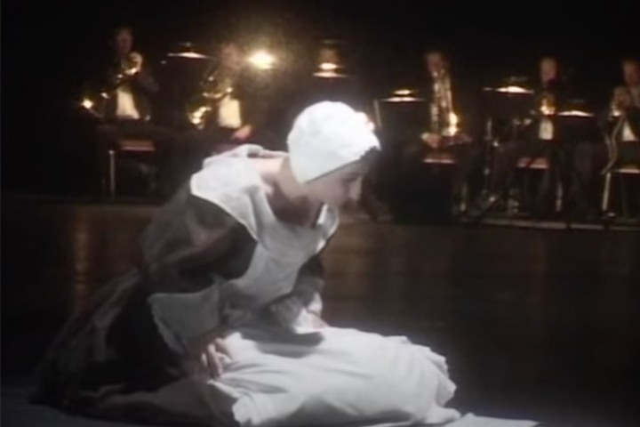
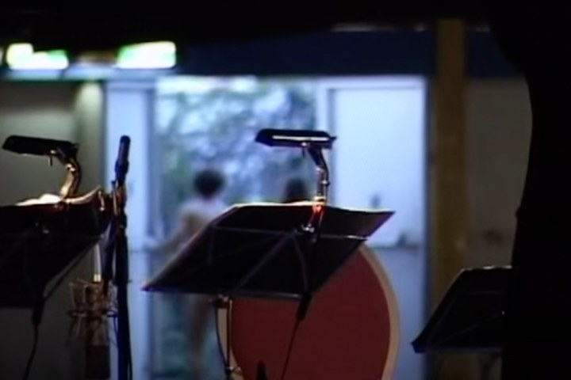

Don Carlo Gesualdo, principe da Venosa. Il madrigalista più sperimentale del tardo Cinquecento. L'aristocratico che uccise la moglie e l'amante a Napoli, nel 1590. Quattro secoli dopo, un'opera-concerto sul processo.
Don Carlo Gesualdo, Prince of Venosa. The most experimental madrigalist of the late sixteenth century. The aristocrat who murdered his wife and her lover in Naples, 1590. Four centuries later, a concert-hall opera on the trial.
Don Carlo Gesualdo, prince de Venosa. Le madrigaliste le plus expérimental de la fin du XVIe siècle. L'aristocrate qui assassina sa femme et son amant à Naples en 1590. Quatre siècles plus tard, un opéra-concert sur le procès.
Nel giugno del 2004, all'Holland Festival di Amsterdam, va in prima assoluta Gesualdo Considered as a Murderer di Luca Francesconi (Milano, 1956) su libretto di Vittorio Sermonti. La commissione è del Holland Festival, che cinque anni dopo il successo del Cave di Steve Reich e di Landschaft mit entfernten Verwandten di Heiner Goebbels propone una nuova concert hall opera: la forma scenica del concerto-narrazione, in cui orchestra, voci soliste e reporter narrante entrano dentro la partitura come elementi drammaturgici.
La regia è di Giorgio Barberio Corsetti; le scene sono firmate da Cristian Taraborrelli. Cast: Davide Damiani nel ruolo di Gesualdo, Eberhard Franscesco Lorenz come servitore-Iago, Alda Caiello nei panni della cameriera della moglie. Il reporter legge le testimonianze originali del processo di Gesualdo del 1590, mentre la musica di Francesconi cuce in tempo reale le citazioni dei madrigali storici del principe-assassino con scrittura contemporanea.
L'opera funziona come una archeologia musicale del delitto: il madrigale tardocinquecentesco — cromatismi sperimentali, dissonanze, modulazioni anticipatrici di Schoenberg — era già cifra di una mente in disordine. Francesconi e Sermonti leggono Gesualdo come il primo moderno della storia musicale europea, e Corsetti/Taraborrelli costruiscono un dispositivo scenico minimale che lascia alla musica lo spazio drammaturgico assoluto.
In June 2004, at the Holland Festival in Amsterdam, the world premiere of Gesualdo Considered as a Murderer by Luca Francesconi (Milan, 1956) on a libretto by Vittorio Sermonti. A Holland Festival commission, following the success of Steve Reich's The Cave and Heiner Goebbels' Landschaft mit entfernten Verwandten, in the form of a new concert hall opera: a concert-narration in which orchestra, soloists and a narrating reporter become dramaturgical elements of the score.
Direction by Giorgio Barberio Corsetti; sets by Cristian Taraborrelli. Cast: Davide Damiani as Gesualdo, Eberhard Franscesco Lorenz as the Iago-like servant, Alda Caiello as the wife's maid. The reporter reads original testimonies from Gesualdo's 1590 trial while Francesconi's music stitches in real time the historical madrigals of the prince-murderer with contemporary writing.
The opera works as a musical archaeology of the crime: the late sixteenth-century madrigal — experimental chromaticism, dissonance, modulations foreshadowing Schoenberg — was already the cipher of a mind out of order. Francesconi and Sermonti read Gesualdo as the first modern in European music history.
En juin 2004, au Holland Festival d'Amsterdam, création mondiale de Gesualdo Considered as a Murderer de Luca Francesconi (Milan, 1956) sur un livret de Vittorio Sermonti. Commande du Holland Festival, dans la forme du concert hall opera, dans la ligneée de The Cave de Steve Reich et Landschaft mit entfernten Verwandten de Heiner Goebbels.
Mise en scène de Giorgio Barberio Corsetti ; scénographie de Cristian Taraborrelli. Distribution : Davide Damiani dans le rôle de Gesualdo, Eberhard Franscesco Lorenz en serviteur-Iago, Alda Caiello en servante de la femme. Le reporter lit les témoignages du procès de 1590 tandis que la musique de Francesconi tisse en temps réel les madrigaux historiques du prince-assassin avec une écriture contemporaine.
Ripresa Integrale — Holland Festival 2004
La produzione è documentata dall’archivio del sound designer Hubert Westkemper, che firma l’impianto acustico dello spettacolo. Disponibili in rete un estratto e la ripresa integrale.
The production is documented in the archive of sound designer Hubert Westkemper, who designed the acoustic setup. An excerpt and the full recording are available online.
La production est documentée dans les archives du concepteur sonore Hubert Westkemper, qui signe l’installation acoustique. Un extrait et la captation intégrale sont disponibles en ligne.
Estratto
Ripresa integrale
Foto di Scena — Archivio Westkemper
Dall’archivio del sound designer Hubert Westkemper.



Tags